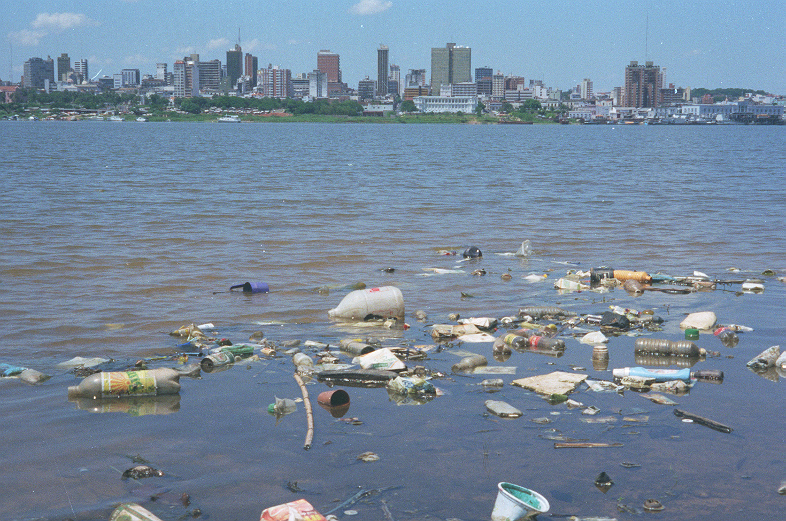

Consecuencias:
Algunas consecuencias:
Las consecuencias en la salud: por la presencia de Dióxido de Sulfuro y Dióxido de Nitrógeno, que son dos de los agentes más perjudiciales para la salud, son desde irritación de ojos, nariz y garganta hasta infecciones respiratorias, como bronquitis y neumonía. Y a largo plazo puede significar infecciones respiratorias crónicas, cáncer de pulmón, problemas cardíacos e incluso daño cerebral y en el sistema nervioso.
Debilitamiento de la capa de ozono:la capa de ozono es la que nos protege de los rayos del Sol, los cuales pueden llegar a ser mortíferos sin esta capa. la consecuencia de este debilitamiento es que cada vez nos protege menos y, por ende, cada vez tenemos una mayor temperatura en el planeta. Esto no solo hace que cada vez haya más zonas desiertas en las que es imposible vivir, sino que también hace que el hielo en los polos se deshaga y mueran muchas especies por ello. No hace falta mencionar que esto hace subir indudablemente el nivel del mar y que, de seguir así, muchas ciudades costeras se verán arrasadas, quedándose sin playas y sin zona costera.
La contaminación afecta al suelo y al agua: la contaminación al medio ambiente afecta al agua y al suelo, lo que hace que cada vez haya más especies en peligro de extinción. El agua no es potable en una gran cantidad de sitios y el suelo para la siembre no tiene los nutrientes necesarios, lo que hace que cada vez se pueda cultivar menos y que el número de cosechas para nuestro sustento sea cada vez menor.

La contaminación afecta al clima: seguro que ya te has dado cuenta que los inviernos pueden ser mucho más fríos o que los veranos son mucho más calurosos, a la vez que seguro te has dado cuenta que las estaciones como el invierno y el verano pueden ser más largas y que las de temperaturas medias, son cada vez más cortas. Todos estos cambios y los fenómenos que no se habían visto desde hace mucho tiempo o incluso nunca se habían visto son causados por la contaminación.
Este fenómeno afecta tanto a los seres humanos como a plantas y animales.


 3
3